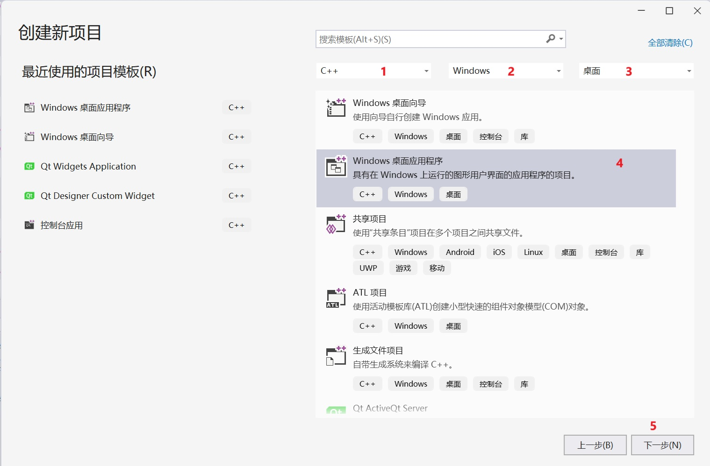
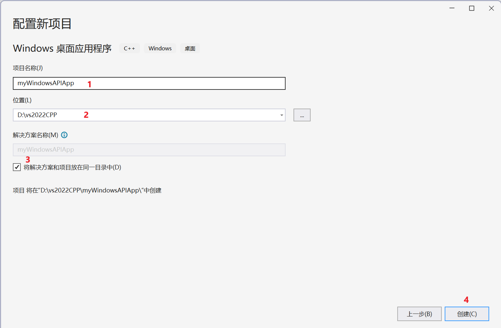
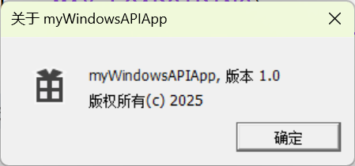
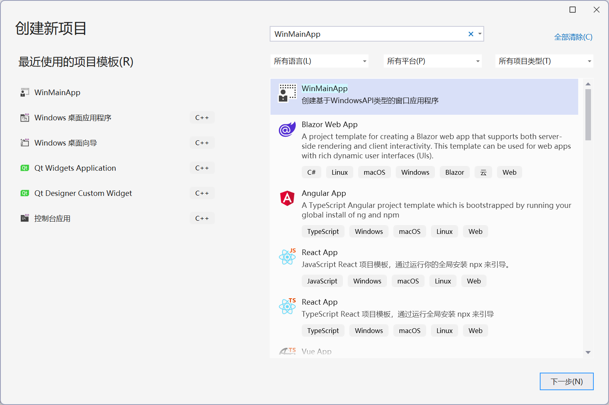
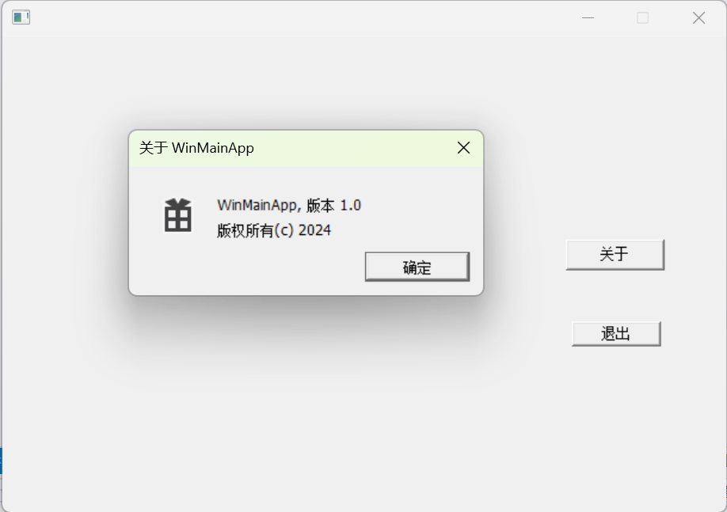

学习C语言或C++编程过程中，多数同学均只能完成基于main()入口函数的控制台console类型例子程序的设计，学习过程中计算结果和用户输入只能通过终端完成：
xstd::cout << "Value of str is : " << str << endl;//输出语句
std::cin >> name >> age; //输入语句学习一段时间后感到枯燥无味，迫切希望能够使用windows窗口进行输入输出。作为初学者，开发一个windows类型的应用程序，虽然可以借助Visual Studio提供的工程向导（windows桌面向导或windows桌面应用程序） 完成基本的windows窗口应用程序框架生成，往往面对上百行程序代码，同学们很多感到头疼无从下手，不知道如何将自动生成的代码与我们需要的输入输出结合起来。
另外Visual Studio生成的windows窗口类型应用程序，主窗口是基于API函数创建的，同学们多数希望能够提供一个可视化形式开发窗口界面，这样更容易初学者上手，为此我们开发了一个基本的WinForm类，完成了windows窗口类型应用程序的基础封装，并且可以借助Visual Studio提供的资源编辑器，创建基于可视化windows窗口类型应用程序。
class WinForm类仅需要两个头文件WinForm.hpp 和Controls.hpp(Controls.hpp封装了windows窗口基础的控件，我们在另一篇文章《windows常用基础控件的使用》中详细讲解)。源代码见本片文章的结尾。这里我们主要讲解WinForm类的使用。
作者已经基于WinForm类开发windows窗口类型的应用程序工程创建过程封装为Visual Studio2022向导，可以通过本文提供的连接WinMainApp.zip下载，其实用方法参见本文第三部分。


注意：第3步建议选择，否则生成的工程文件多一个目录。最后点积创建按钮，就得到创建好的工程。
xxxxxxxxxx// myWindowsAPIApp.cpp : 定义应用程序的入口点。#include "framework.h"#include "myWindowsAPIApp.h"#define MAX_LOADSTRING 100// 全局变量:HINSTANCE hInst; // 当前实例WCHAR szTitle[MAX_LOADSTRING]; // 标题栏文本WCHAR szWindowClass[MAX_LOADSTRING]; // 主窗口类名int APIENTRY wWinMain(_In_ HINSTANCE hInstance,_In_opt_ HINSTANCE hPrevInstance,_In_ LPWSTR lpCmdLine,_In_ int nCmdShow){UNREFERENCED_PARAMETER(hPrevInstance);UNREFERENCED_PARAMETER(lpCmdLine);// 初始化全局字符串LoadStringW(hInstance, IDS_APP_TITLE, szTitle, MAX_LOADSTRING);LoadStringW(hInstance, IDC_MYWINDOWSAPIAPP, szWindowClass, MAX_LOADSTRING);}
xxxxxxxxxx#include "framework.h"#include "myWindowsAPIApp.h"
#include "WinForm.hpp"
xxxxxxxxxxclass WindowsForm :public Win::WinForm{public:WindowsForm() :Win::WinForm(){};virtual void Init_Event(HWND hDlg, UINT message, WPARAM wParam, LPARAM lParam){HWND hWnd = hDlg;// ::GetDlgItem(hDlg, IDC_OPENGLVIEW);return;};};
xxxxxxxxxxWindowsForm g_WinForm;
xxxxxxxxxxg_WinForm.CreateWindowFromReSource(hInstance, IDD_ABOUTBOX);return g_WinForm.Run();
8、运行应用程序

整个工程中myWindowsAPIApp.cpp文件的整体代码如下：
xxxxxxxxxx// myWindowsAPIApp.cpp : 定义应用程序的入口点。//#include "framework.h"#include "myWindowsAPIApp.h"#include "WinForm.hpp"#define MAX_LOADSTRING 100// 全局变量:HINSTANCE hInst; // 当前实例WCHAR szTitle[MAX_LOADSTRING]; // 标题栏文本WCHAR szWindowClass[MAX_LOADSTRING]; // 主窗口类名class WindowsForm :public Win::WinForm{public:WindowsForm() :Win::WinForm(){};virtual void Init_Event(HWND hDlg, UINT message, WPARAM wParam, LPARAM lParam){HWND hWnd = hDlg;// ::GetDlgItem(hDlg, IDC_OPENGLVIEW);return;};};WindowsForm g_WinForm;int APIENTRY wWinMain(_In_ HINSTANCE hInstance,_In_opt_ HINSTANCE hPrevInstance,_In_ LPWSTR lpCmdLine,_In_ int nCmdShow){UNREFERENCED_PARAMETER(hPrevInstance);UNREFERENCED_PARAMETER(lpCmdLine);// 初始化全局字符串LoadStringW(hInstance, IDS_APP_TITLE, szTitle, MAX_LOADSTRING);LoadStringW(hInstance, IDC_MYWINDOWSAPIAPP, szWindowClass, MAX_LOADSTRING);g_WinForm.CreateWindowFromReSource(hInstance, IDD_ABOUTBOX);return g_WinForm.Run();}
记住着两个目录！ C:\Users\xxx\Documents\Visual Studio 2022\My Exported Templates C:\Users\xxx\Documents\Visual Studio 2022\Templates\ProjectTemplates 其实ProjectTemplates这个目录其实才是关键，这个后续再说。

在项目类型中选择WinMainApp类型的应用程序，点击下一步创建应用程序。

xxxxxxxxxx// myWindowsAPIApp.cpp : 定义应用程序的入口点。//#include "framework.h"#include "myWindowsAPIApp.h"#include "WinForm.hpp"#define MAX_LOADSTRING 100// 全局变量:HINSTANCE hInst; // 当前实例WCHAR szTitle[MAX_LOADSTRING]; // 标题栏文本WCHAR szWindowClass[MAX_LOADSTRING]; // 主窗口类名class WindowsForm :public Win::WinForm{public:WindowsForm() :Win::WinForm(){};virtual void Init_Event(HWND hDlg, UINT message, WPARAM wParam, LPARAM lParam){HWND hWnd = hDlg;// ::GetDlgItem(hDlg, IDC_OPENGLVIEW);return;};};WindowsForm g_WinForm;int APIENTRY wWinMain(_In_ HINSTANCE hInstance,_In_opt_ HINSTANCE hPrevInstance,_In_ LPWSTR lpCmdLine,_In_ int nCmdShow){UNREFERENCED_PARAMETER(hPrevInstance);UNREFERENCED_PARAMETER(lpCmdLine);// 初始化全局字符串LoadStringW(hInstance, IDS_APP_TITLE, szTitle, MAX_LOADSTRING);LoadStringW(hInstance, IDC_MYWINDOWSAPIAPP, szWindowClass, MAX_LOADSTRING);g_WinForm.CreateWindowFromReSource(hInstance, IDD_ABOUTBOX);return g_WinForm.Run();// Win::WinForm g_WinForm;// g_WinForm.CreateWindowFromReSource(hInstance, IDD_ABOUTBOX);// return g_WinForm.Run();}
xxxxxxxxxx///////////////////////////////////////////////////////////////////////////////// WinForm.hpp 用于构建Windows API函数形式的应用程序类框架// 本头文件是一个独立的头文件，实现了单个头文件构建API形式应用程序的类// CreateWindowFromCode 用于构建纯API函数形式窗口// CreateWindowFromReSource 用于构建资源文件形式的窗口// FormRun 用于window上窗口事件分发，函数进行了改造，允许用户实现Idle事件// 本次封装结合Controls.hpp 头文件可以完成基本的基于API函数形式Windows窗口开发与数据交互// 注意：本次封装未包含事件处理集成。后续用户可以采用虚函数形式或函数指针形式完成基本事件处理的集成// 版权所有 刘文庆 2023.11 廊坊///////////////////////////////////////////////////////////////////////////////#ifndef WINFORM_HPP#define WINFORM_HPP#include "targetver.h"#define WIN32_LEAN_AND_MEAN // 从 Windows 头文件中排除极少使用的内容// Windows 头文件#include <windows.h>#include <Mmsystem.h>// C 运行时头文件#include <stdlib.h>#include <malloc.h>#include <memory.h>#include <tchar.h>#include "resource.h"#include "Controls.hpp"#include <string>//#include "StringToNumber.hpp"//#include <winnt.h>#pragma comment( lib,"winmm.lib" )// 全局变量:#ifndef MAX_LOADSTRING#define MAX_LOADSTRING 100extern HINSTANCE hInst; // 当前实例extern WCHAR szTitle[MAX_LOADSTRING]; // 标题栏文本extern WCHAR szWindowClass[MAX_LOADSTRING]; // 主窗口类名#else#endifnamespace Win{typedef BOOL(APP_OnIdle)(LONG lCount);class WinForm{protected://static HINSTANCE m_hInstance;HWND m_hWnd = NULL;int m_InsideUseRecource=0;public:static HINSTANCE get_hInstance(HINSTANCE hInstancs = 0);static WinForm* getWinForm(WinForm* pForm = NULL);public:APP_OnIdle* m_pOnIdle = NULL;public:WinForm();// { g_pWInform = this; };virtual ~WinForm() {};HWND CreateWindowFromCode(HINSTANCE hInstance,WCHAR* pszTitle,DWORD IDS_App_Title,WCHAR* pszWindowClass,DWORD IDC_SourceDefineWinForm,DWORD IDI_hIconID, WNDPROC lpfnWndProc = NULL){LoadStringW(hInstance, IDS_App_Title, pszTitle, MAX_LOADSTRING);LoadStringW(hInstance, IDC_SourceDefineWinForm, (LPWSTR)pszWindowClass, MAX_LOADSTRING);hInst = hInstance;// TODO: 在此处放置代码。WNDCLASSEXW wcex;wcex.cbSize = sizeof(WNDCLASSEX);wcex.style = CS_HREDRAW | CS_VREDRAW;if (lpfnWndProc == NULL)wcex.lpfnWndProc = this->WindowProc;elsewcex.lpfnWndProc = lpfnWndProc;wcex.cbClsExtra = 0;wcex.cbWndExtra = 0;wcex.hInstance = hInstance;wcex.hIcon = LoadIcon(hInstance, MAKEINTRESOURCE(IDI_hIconID));wcex.hCursor = LoadCursor(nullptr, IDC_ARROW);wcex.hbrBackground = (HBRUSH)(COLOR_WINDOW + 1);wcex.lpszMenuName = MAKEINTRESOURCEW(IDC_SourceDefineWinForm);wcex.lpszClassName = szWindowClass;wcex.hIconSm = LoadIcon(wcex.hInstance, MAKEINTRESOURCE(IDI_SMALL));RegisterClassExW(&wcex);m_hWnd = CreateWindowW(szWindowClass, szTitle, WS_OVERLAPPEDWINDOW,CW_USEDEFAULT, 0, CW_USEDEFAULT, 0, nullptr, nullptr, hInstance, nullptr);if (!m_hWnd){return NULL;}m_hWnd = m_hWnd;//m_hInstance = hInstance;get_hInstance(hInstance);m_InsideUseRecource = 1;ShowWindow(m_hWnd, SW_NORMAL);UpdateWindow(m_hWnd);return m_hWnd;}HWND CreateWindowFromReSource(HINSTANCE hInstance, int ResourceIDD, DLGPROC lpDialogFunc = NULL, HWND parent = NULL){hInst = hInstance;//HWND hWnd = NULL;// 直接创建// if (lpDialogFunc == NULL)// hWnd = ::CreateDialog(hInstance, MAKEINTRESOURCE(ResourceIDD), parent, DialogWindowProc);// else// hWnd = ::CreateDialog(hInstance, MAKEINTRESOURCE(ResourceIDD), parent, lpDialogFunc);// 间接创建HRSRC hRs = FindResource(hInstance, MAKEINTRESOURCE(ResourceIDD), RT_DIALOG); // 将资源加载到内存HGLOBAL hGl = LoadResource(hInstance, hRs); // 找到对话框的有用数据LPCDLGTEMPLATE pTemplate = (LPCDLGTEMPLATE)LockResource(hGl); // 将内存中数据放入结构体if (lpDialogFunc == NULL)m_hWnd = CreateDialogIndirect(hInstance, pTemplate, parent, DialogWindowProc);elsem_hWnd = CreateDialogIndirect(hInstance, pTemplate, parent, lpDialogFunc);if (!m_hWnd){return FALSE;}else{m_hWnd = m_hWnd;//m_hInstance = hInstance;get_hInstance(hInstance);}m_InsideUseRecource = 2;RECT rtDlg;GetWindowRect(m_hWnd, &rtDlg);int nScreenX = GetSystemMetrics(SM_CXSCREEN);int nScreenY = GetSystemMetrics(SM_CYSCREEN);SetWindowPos(m_hWnd,HWND_TOP,nScreenX / 2 - rtDlg.right / 2,nScreenY / 2 - rtDlg.bottom / 2,0,0,SWP_NOSIZE | SWP_SHOWWINDOW); //SWP_NOSIZE)ShowWindow(m_hWnd, SW_NORMAL);UpdateWindow(m_hWnd);return m_hWnd;}int APIENTRY Run(APP_OnIdle* pOnIdle=NULL){// HACCEL hAccelTable = LoadAccelerators(hInst, MAKEINTRESOURCE(IDC_WINDOWSFORM));MSG msg = { 0 };//4. 消息循环while (WM_QUIT != msg.message){if (PeekMessage(&msg, nullptr, 0, 0, PM_REMOVE)){ //到消息队列中查找有没有消息 有则获取 没有则直接返回 不会阻塞 opengl一般使用这种方式在else中实现绘制和逻辑计算TranslateMessage(&msg); //翻译消息DispatchMessage(&msg); //分发消息 最后由 wndProc函数处理各种不同的消息}else{DWORD d = ::timeGetTime();if (pOnIdle != NULL){m_pOnIdle = pOnIdle;m_pOnIdle(d);}else{OnIdle(d);}}}// 主消息循环:/* while (GetMessage(&msg, nullptr, 0, 0)){if (!TranslateAccelerator(msg.hwnd, hAccelTable, &msg)){TranslateMessage(&msg);DispatchMessage(&msg);}}*/return (int)msg.wParam;}static INT_PTR ShowModelDialog(DWORD DialogSource_ID, HWND Parent, DLGPROC lpDialogFunc=nullptr);static LRESULT CALLBACK WindowProc(HWND hWnd, UINT message, WPARAM wParam, LPARAM lParam);virtual LRESULT CALLBACK WndProc(HWND hWnd, UINT message, WPARAM wParam, LPARAM lParam);static INT_PTR CALLBACK DialogWindowProc(HWND hDlg, UINT message, WPARAM wParam, LPARAM lParam);virtual INT_PTR CALLBACK DialogFormProc(HWND hDlg, UINT message, WPARAM wParam, LPARAM lParam);virtual BOOL OnIdle(LONG lCount){return TRUE;}virtual void Init_Event(HWND hDlg, UINT message, WPARAM wParam, LPARAM lParam) {};virtual void Command_Event(HWND hDlg, UINT message, WPARAM wParam, LPARAM lParam) {};virtual void Notify_Event(HWND hDlg, UINT message, WPARAM wParam, LPARAM lParam) {};virtual void Paint_Event(HDC hdc, WPARAM wParam, LPARAM lParam) { };virtual void Resize_Event(HWND hDlg, UINT message, WPARAM wParam, LPARAM lParam) {};virtual void Close_Event(HWND hDlg, UINT message, WPARAM wParam, LPARAM lParam) {};virtual void Destroy_Event(HWND hDlg, UINT message, WPARAM wParam, LPARAM lParam) {};virtual void KeyDown_Event(HWND hDlg, UINT message, WPARAM wParam, LPARAM lParam) {};virtual void KeyUp_Event(HWND hDlg, UINT message, WPARAM wParam, LPARAM lParam) {};virtual void KeyChar_Event(HWND hDlg, UINT message, WPARAM wParam, LPARAM lParam) {};virtual void MouseLButtonDown_Event(HWND hDlg, UINT message, WPARAM wParam, LPARAM lParam) {};virtual void MouseLButtonUp_Event(HWND hDlg, UINT message, WPARAM wParam, LPARAM lParam) {};virtual void MouseLButtonDBClick_Event(HWND hDlg, UINT message, WPARAM wParam, LPARAM lParam) {};virtual void MouseMButtonDown_Event(HWND hDlg, UINT message, WPARAM wParam, LPARAM lParam) {};virtual void MouseMButtonUp_Event(HWND hDlg, UINT message, WPARAM wParam, LPARAM lParam) {};virtual void MouseMButtonDBClick_Event(HWND hDlg, UINT message, WPARAM wParam, LPARAM lParam) {};virtual void MouseRButtonDown_Event(HWND hDlg, UINT message, WPARAM wParam, LPARAM lParam) {};virtual void MouseRButtonUp_Event(HWND hDlg, UINT message, WPARAM wParam, LPARAM lParam) {};virtual void MouseRButtonDBClick_Event(HWND hDlg, UINT message, WPARAM wParam, LPARAM lParam) {};virtual void MouseMove_Event(HWND hDlg, UINT message, WPARAM wParam, LPARAM lParam) {};virtual void MouseWheel_Event(HWND hDlg, UINT message, WPARAM wParam, LPARAM lParam) {};virtual void ExternEvent_Proc(HWND hDlg, UINT message, WPARAM wParam, LPARAM lParam){if (m_InsideUseRecource == 1){DefWindowProc(hDlg, message, wParam, lParam);}};};// class WinForm;inline WinForm* WinForm::getWinForm(WinForm* pForm){static WinForm* _pInsideWinForm = NULL;if (pForm != NULL)_pInsideWinForm = pForm;return _pInsideWinForm;}inline HINSTANCE WinForm::get_hInstance(HINSTANCE hInstancs){static HINSTANCE _hInstance = NULL;if (hInstancs != NULL){_hInstance = hInstancs;}return _hInstance;}inline INT_PTR WinForm::ShowModelDialog(DWORD DialogSource_ID, HWND Parent, DLGPROC lpDialogFunc){if(lpDialogFunc==nullptr)return DialogBox(WinForm::get_hInstance(), MAKEINTRESOURCE(DialogSource_ID), Parent, WinForm::DialogWindowProc);return DialogBox(WinForm::get_hInstance(), MAKEINTRESOURCE(DialogSource_ID), Parent, lpDialogFunc);}/* 2024年1月26日 为了减少WINFORM_USER宏定义，将该部分代码定义到成员函数中getWinForm和get_hInstance* 并且在成员函数中定义为静态的成员变量，这样就解决了系统定义全局变量的难点。#ifdef WINFORM_USERHINSTANCE WinForm::m_hInstance = NULL;WinForm* g_pWInform = NULL;inline INT_PTR WinForm::ShowModelDialog(DWORD DialogSource_ID, HWND Parent, DLGPROC lpDialogFunc){return DialogBox(WinForm::m_hInstance, MAKEINTRESOURCE(DialogSource_ID), Parent, lpDialogFunc);}#elseextern WinForm* g_pWInform;#endif*/inline WinForm::WinForm(){getWinForm(this);// g_pWInform = this;};inline LRESULT CALLBACK WinForm::WindowProc(HWND hWnd, UINT message, WPARAM wParam, LPARAM lParam){return getWinForm()->WndProc(hWnd, message, wParam, lParam);/*if (g_pWInform == NULL)return 0;return g_pWInform->WndProc(hWnd, message, wParam, lParam);*/}inline INT_PTR CALLBACK WinForm::DialogWindowProc(HWND hDlg, UINT message, WPARAM wParam, LPARAM lParam){return getWinForm()->DialogFormProc(hDlg, message, wParam, lParam);/*if (g_pWInform == NULL)return 0;return g_pWInform->DialogFormProc(hDlg, message, wParam, lParam);*/}inline LRESULT CALLBACK WinForm::WndProc(HWND hWnd, UINT message, WPARAM wParam, LPARAM lParam){if (this->m_hWnd == NULL){this->m_hWnd = hWnd;}switch (message){case WM_CREATE:{Init_Event(hWnd, message, wParam, lParam);}break;case WM_COMMAND:{Command_Event(hWnd, message, wParam, lParam);/*int wmId = LOWORD(wParam);// 分析菜单选择:switch (wmId){// case IDC_BUTTON1:// ::MessageBox(hWnd, L"你好", L"关于", MB_OK);// break;case IDM_ABOUT:::MessageBox(hWnd, L"你好", L"关于", MB_OK);break;case IDM_EXIT:DestroyWindow(hWnd);break;default:return DefWindowProc(hWnd, message, wParam, lParam);}*/}break;case WM_NOTIFY:{Notify_Event(hWnd, message, wParam, lParam);// NMHDR* p = (NMHDR*)(void*)lParam;// LONG iID = wParam;// if (iID == IDC_SLIDER1)//{// HWND hWnd = GetDlgItem(hDlg, IDOK);// }// else if (wParam == IDC_SPIN1)// {// LPNMUPDOWN np;// np = (LPNMUPDOWN)lParam;// SetDlgItemInt(hwndDlg, IDC_EDIT, np->iDelta + np->iPos, FALSE);//}}break;case WM_KEYDOWN:{KeyDown_Event(hWnd, message, wParam, lParam);}break;case WM_KEYUP:{KeyUp_Event(hWnd, message, wParam, lParam);}break;case WM_CHAR:{KeyChar_Event(hWnd, message, wParam, lParam);}break;case WM_MOUSEMOVE:{MouseMove_Event(hWnd, message, wParam, lParam);}break;case WM_MOUSEHWHEEL:{MouseWheel_Event(hWnd, message, wParam, lParam);}break;case WM_LBUTTONDOWN:{MouseLButtonDown_Event(hWnd, message, wParam, lParam);}break;case WM_LBUTTONUP:{MouseLButtonUp_Event(hWnd, message, wParam, lParam);}break;case WM_LBUTTONDBLCLK:{MouseLButtonDBClick_Event(hWnd, message, wParam, lParam);}break;case WM_MBUTTONDOWN:{MouseMButtonDown_Event(hWnd, message, wParam, lParam);}break;case WM_MBUTTONUP:{MouseMButtonUp_Event(hWnd, message, wParam, lParam);}break;case WM_MBUTTONDBLCLK:{MouseMButtonDBClick_Event(hWnd, message, wParam, lParam);}break;case WM_RBUTTONDOWN:{MouseRButtonDown_Event(hWnd, message, wParam, lParam);}break;case WM_RBUTTONUP:{MouseRButtonUp_Event(hWnd, message, wParam, lParam);}break;case WM_RBUTTONDBLCLK:{MouseRButtonDBClick_Event(hWnd, message, wParam, lParam);}break;case WM_PAINT:{PAINTSTRUCT ps;HDC hdc = BeginPaint(hWnd, &ps);// TODO: 在此处添加使用 hdc 的任何绘图代码...Paint_Event(hdc, wParam, lParam);EndPaint(hWnd, &ps);}break;case WM_SIZE:{Resize_Event(hWnd, message, wParam, lParam);}break;case WM_CLOSE:{Close_Event(hWnd, message, wParam, lParam);::SendMessageW(hWnd, WM_DESTROY, 0, 0);}break;case WM_DESTROY:Destroy_Event(hWnd, message, wParam, lParam);PostQuitMessage(0);break;default:{ExternEvent_Proc(hWnd, message, wParam, lParam);}//return DefWindowProc(hWnd, message, wParam, lParam);}return 0;}inline INT_PTR CALLBACK WinForm::DialogFormProc(HWND hDlg, UINT message, WPARAM wParam, LPARAM lParam){if (this->m_hWnd == NULL){this->m_hWnd = hDlg;}UNREFERENCED_PARAMETER(lParam);switch (message){case WM_INITDIALOG:{Init_Event(hDlg,message,wParam,lParam);// Win::Button buton(hDlg, IDOK);// buton.disable();// Win::ListBox listbox(hDlg, IDC_LIST1);// listbox.addString(L"aasss");// listbox.addString(L"fdsfdsfds");// Win::ComboBox combobox(hDlg, IDC_COMBO1);// combobox.addString(L"sdfdsfsdf");// combobox.addString(L"yuyuyuyu");// Trackbar trackbar(hDlg, IDC_SLIDER1);// trackbar.setRange(0, 100);return (INT_PTR)TRUE;}break;/* WM_COMMAND消息解析：按钮（包含Button、CheckBox、RadioButton）这些控件通过BN_CLICKED消息处理点击事件在WM_COMMAND中，lParam用来区分是命令消息还是控件通知消息：如果lParam为NULL，则这是个命令消息，否则lParam里面放的必然就是控件的句柄，是一个控件通知消息。对于wParam则是低位放的是控件ID，高位放的是相应的消息事件*/case WM_COMMAND:{Command_Event(hDlg,message, wParam, lParam);//控件ID//WORD wControlID = LOWORD(wParam);//消息码// WORD wCode = HIWORD(wParam);//if (wCode == BN_CLICKED) //否则弹出两次// {// 分析菜单选择:/* switch (wControlID){case IDOK:{::MessageBox(hDlg, L"你好", L"关于", MB_OK);// Win::Button buton(hDlg, IDOK);// buton.disable();// Win::EditBox edit1(hDlg, IDC_EDIT1);// wchar_t tempStr[256];// edit1.getText(tempStr,256);// std::wstring wstr = tempStr;// unsigned long A = std::stol(tempStr);//toNumber(wstr);// toNumber(wstr);}break;case IDM_ABOUT:::MessageBox(hDlg, L"你好", L"关于", MB_OK);// DialogBox(hInst, MAKEINTRESOURCE(IDD_ABOUTBOX), hWnd, About);// WinForm::ShowModelDialog(IDD_ABOUTBOX, hDlg, About);break;case IDM_EXIT:DestroyWindow(hDlg);break;}*///}//else if (wCode == EN_CHANGE)//编辑框内容改变发送信息//{// int a = 12;// int b = 0;//}//else if (wCode == LBN_SELCHANGE)//listBox//{// switch (wControlID)// {//case IDC_LIST2:// Win::ListBox listbox(hDlg, IDC_LIST2);// listbox.addString(L"aasss");// break;// }// }// else if (wCode == CBN_SELCHANGE)//ComboBox//{//}}break;/* WM_NOTIFY消息解析：window3.*公布的控件不支持WM_NOTIFY，后来* winows32增加的该消息，主要是为了为新增的控件进行消息处理使用。* 我们在Controls.hpp中处理的控件支持WM_NOTIFY控件有：UpDownBox、TreeView、Trackbar其它控件支持Command消息，控件的处理消息应放在COMMAND中进行在WM_NOTIFY中，lParam中放的是一个称为NMHDR结构的指针，wParam中放的则是控件的IDNMHDR{HWnd hWndFrom; 相当于原WM_COMMAND传递方式的lParam，即消息所属窗口的句柄UINT idFrom; 相当于原WM_COMMAND传递方式的wParam（low - order），即消息所属控件的IDUINT code; 相当于原WM_COMMAND传递方式的Notify Code(wParam"s high-order)，即消息事件码}；*/case WM_NOTIFY:{Notify_Event(hDlg, message, wParam, lParam);// NMHDR* p = (NMHDR*)(void*)lParam;// LONG iID = wParam;// if (iID == IDC_SLIDER1)//{// HWND hWnd = GetDlgItem(hDlg, IDOK);// }// else if (wParam == IDC_SPIN1)// {// LPNMUPDOWN np;// np = (LPNMUPDOWN)lParam;// SetDlgItemInt(hwndDlg, IDC_EDIT, np->iDelta + np->iPos, FALSE);//}}break;case WM_KEYDOWN:{KeyDown_Event(hDlg, message, wParam, lParam);}break;case WM_KEYUP:{KeyUp_Event(hDlg, message, wParam, lParam);}break;case WM_CHAR:{KeyChar_Event(hDlg, message, wParam, lParam);}break;case WM_MOUSEMOVE:{MouseMove_Event(hDlg, message, wParam, lParam);}break;case WM_MOUSEHWHEEL:{MouseWheel_Event(hDlg, message, wParam, lParam);}break;case WM_LBUTTONDOWN:{MouseLButtonDown_Event(hDlg, message, wParam, lParam);}break;case WM_LBUTTONUP:{MouseLButtonUp_Event(hDlg, message, wParam, lParam);}break;case WM_LBUTTONDBLCLK:{MouseLButtonDBClick_Event(hDlg, message, wParam, lParam);}break;case WM_MBUTTONDOWN:{MouseMButtonDown_Event(hDlg, message, wParam, lParam);}break;case WM_MBUTTONUP:{MouseMButtonUp_Event(hDlg, message, wParam, lParam);}break;case WM_MBUTTONDBLCLK:{MouseMButtonDBClick_Event(hDlg, message, wParam, lParam);}break;case WM_RBUTTONDOWN:{MouseRButtonDown_Event(hDlg, message, wParam, lParam);}break;case WM_RBUTTONUP:{MouseRButtonUp_Event(hDlg, message, wParam, lParam);}break;case WM_RBUTTONDBLCLK:{MouseRButtonDBClick_Event(hDlg, message, wParam, lParam);}break;case WM_PAINT:{PAINTSTRUCT ps;HDC hdc = BeginPaint(hDlg, &ps);// TODO: 在此处添加使用 hdc 的任何绘图代码...Paint_Event(hdc, wParam, lParam);EndPaint(hDlg, &ps);}break;case WM_SIZE:{Resize_Event(hDlg, message, wParam, lParam);}break;case WM_CLOSE:{Close_Event(hDlg, message, wParam, lParam);::SendMessageW(hDlg, WM_DESTROY, 0, 0);}break;case WM_DESTROY:{Destroy_Event(hDlg, message, wParam, lParam);PostQuitMessage(0);}break;default:{ExternEvent_Proc(hDlg, message, wParam, lParam);}}return (INT_PTR)FALSE;}}#endif